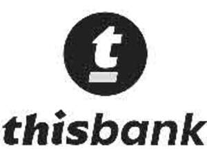

Trade Mark Journal No.2025/032 8 August 2025
UK00004242317 31 July 2025 (36)
Mark 1
Mark 2

- Class 36
- ATM banking services; Advisory services relating to banking; Automated banking services; Automated banking services relating to charge card transactions; Automated banking services relating to credit card transactions; Automatic banking services for change giving; Card accessed banking services; Clearing services (Bankers' -); Clearing-house services (Bankers' -); Computerised banking services; Computerised information services relating to banking matters; Consultations relating to banking; Electronic banking; Electronic banking services; Electronic banking via a global computer network [internet banking]; Evaluation (Financial -) [insurance, banking, real estate]; Financial advisory services provided for bankers; Financial and monetary services, and banking; Financial banking; Financial banking services for the deposit of money; Financial banking services for the withdrawal of money; Financial evaluation [insurance, banking, real estate]; Financial evaluations [banking]; Financial information services for banks provided via computer networks and satellite transmissions; Financial management relating to banking; Financial management services relating to banking institutions; Financial services related to the issuance of bank cards and debit cards; Financial services relating to bank cards; Financial underwriting and securities issuance (investment banking); Home banking; Home banking services; Information services relating to banking; International banking; Internet banking; Internet banking services; Investment bank services; Investment banking; Investment banking consulting and advisory services; Investment banking services; Issuance of bank checks; Issuing of bank cheques; Merchant bank (Services of a -); Merchant banking; Merchant banking services; Mortgage banking; Mortgage banking and brokerage; Mortgage banking and mortgage brokerage; Mortgage banking and mortgage broking; Mortgage banking insurance; On-line banking; On-line banking services; Online banking; Online banking services; Online business banking services; Personal banking services; Personal financial banking services; Bank account and savings account services; Bank account information services; Bank account services; Bank card services; Bank card, credit card, debit card and electronic payment card services; Bank cheque card services; Bank note checking; Bankers clearing house services; Bankers' clearing services; Banking; Banking (Home -); Banking and financial services; Banking and financing services; Banking insurance; Banking services; Banking services for deposit-taking; Banking services in relation to the electronic transfer of funds; Banking services provided for paying bills by telephone; Banking services relating to the acceptance of fixed interval installment payments; Banking services relating to the deposit of money; Banking services relating to the transfer of funds from accounts; Banking services relating to travellers' cheques; Private banking; Processing of payments for banks; Providing bank account information by telephone; Providing banking information; Providing information, consultancy and advice in the field of investment banking; Providing of banking services; Rental of bank cash dispensing machines; Rental of banknote and coin counting or sorting machines; Rental of machines for counting and sorting banknotes; Rental of machines for counting or sorting banknotes and coins; Research services relating to banking; Savings bank services; Telephone banking and insurance services; Telephone banking services.
JN BANK UK LTD
Representative: Capital Law Limited